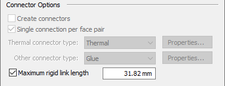

Create connectors based on assembly relationships
You can create connections automatically between faces and surfaces when you are creating a new study. Connectors are based on the mate relationships between parts, as defined in the assembly model itself.
If you use this method, you can skip the step of defining assembly connectors using the Auto command or the Manual command.
-
In the Create Study dialog box, under Connector Options, select Create connectors.

-
Use the following options to specify the assembly connectors to be added:
-
Choose a connector type based on your study type:
-
Glue
-
No Penetration
-
Thermal
-
Thermal Glue
For more information, see Glue and no penetration contact connectors and Thermal connectors.
-
-
(Optional) Limit the number of connectors created by selecting Single connection per face pair.
An over-constrained model may generate an NX Nastran solver processing error.
-
(Optional) Review and modify the settings in the Connector Properties dialog box.
-
-
Click OK to close the dialog box.
The connectors are created automatically after you select the geometry to include in the study using the Define command.
How do I
Create assembly connectors using the Auto commandCreate manual connections between faces or surfaces
Replace target and source connection regions
Change connector region direction
Learn more
Assembly connectorsTarget and source connector regions
Assembly connector handles, labels, and symbols
Glue and no penetration contact connectors
Thermal connectors
Look up more details
Auto command barAssembly Connector command bar
Assembly Connector Properties dialog box